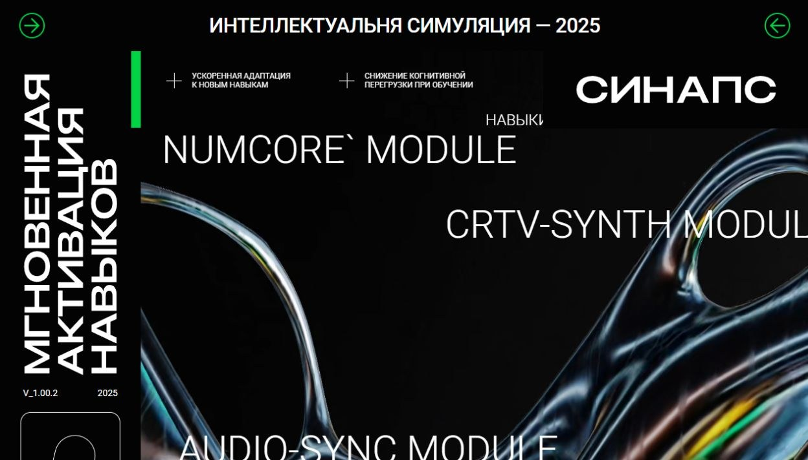

01 / SELECTED WORK
skill simulation / 2025

Концепт · интерактивный сайт
01 / 07
Sinaps
Футуристичный интерфейс о симуляции навыков: крупная типографика, модульная графика и ощущение цифрового продукта.
HTML · CSS · JavaScript